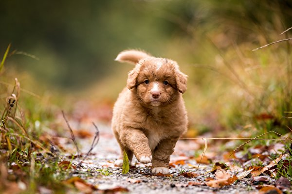
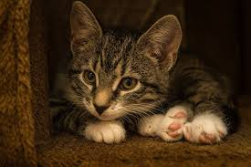

Misión
Ayudar a personas de escasos recursos a mejorar su nivel de vida, con el objetivo de reducir su impacto ambiental e incrementar el equilibrio entre sus comunidades, el medio ambiente y los animales, reduciendo así el maltrato animal.

Vision
Estamos convencidos que es posible acabar con el maltrato animal, creemos que la sociedad está cambiando y cada vez se preocupa más por el bienestar animal, nuestra misión es muy clara: Acabar con el maltrato animal promoviendo la adopción de animales, la esterilización.